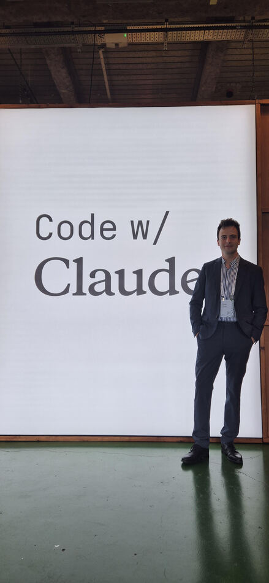
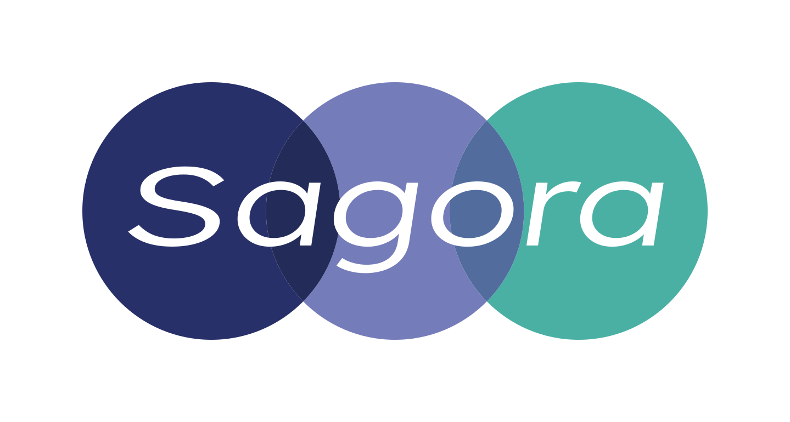

Spotify
+60%
PR frequency
96% des engineers codent avec AI. Agent Honk sur Agent SDK, branché à Fleetshift + Backstage. ~50 migrations traitées (JS→TS notamment).
Honk Part 4 · Engineering blog ↗Une journée « laptops open » pour indie devs et early-stage founders, en suivi du Day 1 conférence. Recap interactif des 16 features Anthropic, des case studies clients (Spotify, Harvey, Lovable), des workshops Applied AI, et des patterns à embarquer.

Cinq idées suffisent à comprendre ce que CwC London 2026 change pour quelqu'un qui build avec Claude.
Des sessions Claude Code sans humain pour démarrer. Cron, GitHub event, ou webhook API. Pro 5/j · Max 15/j · Enterprise 25/j.
Self-improvement scheduled. Harvey rapporte ~6× sur le task completion rate après activation. Research preview.
Rubric en MD + grader indépendant. +8.4% sur docx, +10.1% sur pptx en benchmarks internes. Public beta.
Lead agent qui délègue à des spécialistes en parallèle. Workflow research+synthèse : 40 min → 8-12 min wall-clock.
Le code est devenu cheap. Le moat des équipes : comment elles vérifient. Structure ton code par vérifiabilité.
La promesse implicite du format Extended : ce qu'Anthropic a annoncé en keynote SF/London Day 1 est mis en pratique Day 2. Voici les mappings.
▶ Opening Keynote London (Day 1) · Boris Cherny, Cat Wu, Angela Jiang, Katelyn Lesse
Higher-order prompts. Triggers cron, GitHub events, HTTP API. Quotas par plan.
Plusieurs sessions Claude en parallèle, async. PR autofix sans jamais voir le X rouge CI.
Double check destructif + injection avant action. Moins d'interruptions.
Squelette Python avec memory="on". Auto Mode invisible mais omniprésent.
Surveille la PR de la création au merge. Fix root causes, pas que retry.
Reproduit → test → fix → PR. Pas de PR sans test de régression qui prouve le bug.
Self-improvement scheduled : review sessions passées, extract patterns, curate memories.
Agent qui apprend de ses runs. descent-playbook.md généré automatiquement.
Top-level CLI view. Desktop rebuild : sessions groupées par repo, inline comments.
5+ sessions parallèles managées sans chaos terminal.
Lead agent + specialists en parallèle. Shared filesystem. Console traceability.
Repo public cwc-long-running-agents. Context resets entre agents.
Accès aux MCP privés derrière firewall sans exposition publique.
Data warehouse + feature flag service, les deux derrière firewall. Aucun ne touche internet public.
Executor Sonnet + Advisor Opus. Frontier quality à 5× moins cher.
Sonnet lit, Opus re-classifie sur signal faible. AT RISK détecté qu'un Sonnet seul aurait raté.
Filtre par couche, statut de disponibilité. Clique sur une carte pour le détail complet.
Les 8 entreprises citées comme références d'usage en production. Chaque card pointe vers une source vérifiable. Les chiffres marqués « non communiqué » sont des cas où Anthropic mentionne la référence sans publier de KPI public.
96% des engineers codent avec AI. Agent Honk sur Agent SDK, branché à Fleetshift + Backstage. ~50 migrations traitées (JS→TS notamment).
Honk Part 4 · Engineering blog ↗Plateforme legal AI. Boost rapporté en interne après activation de Dreaming pour consolider la mémoire des sessions de recherche.
Anthropic blog · Managed Agents ↗Adoption de Tool Search en prod. Moins de contexte non-pertinent → meilleur signal et performances accrues.
Citation Day 1 SF ↗Agent Claude Code autonome plus de commits sur Bun que Jarred. Reproduit chaque issue, pas de PR sans test de régression qui prouve le bug.
github.com/robobun ↗Cité par Anthropic comme référence enterprise agents. Cas d'usage évoqué : déploiement d'agents sur la plateforme produit. KPI public à venir.
Mention Day 1 SF ↗Référence européenne santé. Anthropic positionne Claude comme « workflow software for regulated healthcare ». Cas d'usage typiques : pre-auth, documentation, FHIR.
Healthcare news · Anthropic ↗Cité comme exemple de plateforme qui s'auto-répare via agents. Détails techniques à recueillir auprès de leur engineering blog.
Mention Day 1 SF ↗Cas démontré Day 1 : analyse de risque sur renouvellements M&A. Sonnet classifie, Opus appelé sur signal faible re-classifie en AT RISK. Sonnet seul aurait raté.
Advisor Strategy · Anthropic ↗Le cœur du format Extended : founders qui racontent les bets early-stage qui ont payé, et les judgement calls qu'ils ont dû faire sans manuel.
Tous les founders sur scène insistent : tu ne débugges pas un agent, tu évalues. Construire une suite d'evals avant le premier client.
Les startups gagnantes ont resserré sur un cas d'usage extrêmement précis. Eve Legal n'est pas « AI pour avocats » mais « analyse de risque sur renouvellements de contrats commerciaux M&A ». La précision du wedge permet :
Plusieurs founders ont admis avoir passé plus de temps sur la distribution que sur le modèle. Avec Claude qui fait 80% du boulot d'ingénierie, la différenciation se fait sur l'accès au client, le canal, la marque.
| Décision | Le piège | Le choix qui a marché |
|---|---|---|
| Open source vs. fermé | Vouloir capturer la valeur dès J1 | Open source la stack, fermer le workflow |
| Self-hosted vs. managed | Tout self-host pour « le contrôle » | Démarrer managed, migrer si compliance le force |
| Sonnet vs. Opus | Toujours Opus « pour la qualité » | Sonnet par défaut, Opus en advisor sur les cas durs |
| Évaluer Claude vs. ton produit | Mesurer la qualité du modèle | Mesurer la qualité de l'output utilisateur |
L'idée centrale (Dianne Penn keynote SF, reprise par Matt Bleifer « The Thinking Lever ») : les modèles continuent de s'améliorer. Choses qui ne marchaient pas il y a 6 mois marchent maintenant. Retry vos use cases échoués à chaque release.
Jarred Sumner (créateur de Bun, runtime JS racheté par Anthropic en décembre 2025) a montré Robobun : un agent Claude Code autonome qui bosse sur le codebase Bun.
Pas de slides marketing. Du live coding et des techniques pratiques que les équipes Anthropic utilisent au quotidien.
Boris exécute la démo avec l'app Claude Desktop. La tâche : ajouter les refunds au dashboard d'ACME. Contraintes annoncées en prompt :
Le panneau droit montre l'UI web en cours de développement, avec Claude qui utilise l'interface en direct et découvre un edge-case bug pendant qu'il code.
Boris a plusieurs sessions Claude qui tournent en parallèle dans l'app Desktop. Il switch entre elles et voit lesquelles ont besoin de son input.
Le pitch d'ouverture : les agents tournent désormais 8 à 10h. Ils coûtent du vrai argent. Quand ça part en vrille à mi-parcours, ça fait mal. Comment rester dans la boucle sans hover en permanence ?
Dis ces mots et Claude passe en mode question. Pour quelque chose de vague, attends-toi à 30 à 40 questions sur plusieurs rounds. Démo originelle : « create a bill splitting app for me » (intentionnellement vague). Claude enchaîne : Qui est l'audience ? Colocataires ? Voyage en groupe ? Multi-devises ?
Démo : 4 directions de design pour la bill-splitting app (receipt-style, ledger, Venmo-style, card-stack), chacune comme un set de fichiers HTML avec mockups full-screen. 15 minutes pour produire 4 directions. Fraction du coût en tokens.
Verification environments : comme Storybook, mais conçu pour la vérification. Sa démo React loadait les composants un par un, exécutait des actions, et enregistrait des video clips des résultats. Sur le codebase Claude Code, quand il soumet une PR, il reçoit une vidéo de Claude qui teste ses changements.
L'agent tourne en continu sur le repo Bun. Pour chaque issue ouverte :
La PR vient de @robobun, est reviewée par @coderabbitai et @claude, puis demande l'approbation humaine pour merge.
Les hands-on sessions qu'Anthropic utilise pour former son propre staff, adaptées pour la salle. Cinq étapes qui composent un programme cohérent.
Du hello-world au premier déploiement. Squelette Python, outcomes rubric, sandbox config.
Claude Managed Agents (public beta depuis le 8 avril 2026) est une couche au-dessus de l'API. Au lieu de tenir toi-même la boucle d'agent (prompts, tool calling, retry, memory, logs), tu déclares quoi et la plateforme gère comment.
| Tu fournis | La plateforme gère |
|---|---|
| Un prompt système | Boucle d'inférence |
| La liste des tools (MCP) | Tool calling, parsing, retry |
| Un rubric d'outcomes (optionnel) | Grader, re-runs, scoring |
| Un sandbox config (optionnel) | Exécution code, isolation |
| Une politique de mémoire | Stockage, retrieval, dreaming |
from claude_platform import ManagedAgent, Tool
agent = ManagedAgent(
name="support-triage",
model="claude-sonnet-4-6",
system_prompt="""You triage support tickets...""",
tools=[
Tool.mcp("zendesk"),
Tool.mcp("notion"),
Tool.bash(),
],
memory="on", # auto memory + dreaming
outcomes="./rubric.md", # succès défini en MD
sandbox="vercel-functions", # self-hosted ok
)
result = agent.run("Ticket #5482: customer can't reset password")Les 3 niveaux : context window · memory store · dreaming. Heuristique YES/NO.
| Niveau | Quand | Mécanisme |
|---|---|---|
| Context window | Dans une session | Tokens chargés |
| Memory store | Entre sessions | Retrieval indexé |
| Dreaming | Scheduled, offline | Self-improvement |
Structure golden/edge/adversarial/regressions. Rubric.md + grader pattern.
# evals/
├── golden_path/ # 20 cas réels typiques
├── edge_cases/ # 30 cas qui ont déjà cassé la prod
├── adversarial/ # 10 cas qui tentent prompt injection
├── regressions/ # tout bug fixé = nouvel eval ici
└── graders/ # prompts qui jugent les outputs
├── correctness.md
├── style.md
└── safety.md# Customer support response · success criteria
A good response MUST:
1. Address the customer's actual question (not generic)
2. Cite the correct policy / KB article
3. Use the customer's name
4. Be under 200 words
5. Have a clear next action
A good response MUST NOT:
- Apologize more than once
- Use jargon (CTRL+F: "synergy", "leverage", "circle back")
- Promise something not in the KBPattern Planner / Generator / Evaluator. Context resets et handoff artifacts.
▶ Anthropic · Building Agent Harnesses for Large Codebases
Le harness Anthropic à trois agents adresse les modes d'échec courants : perte de contexte, termination prématurée, auto-évaluation biaisée. Clique sur un agent pour voir son rôle.
Décompose le spec en chunks tractables.
Produit code, tests, CI, docs.
Évaluation indépendante du résultat.
| Setup | Durée | Coût | Résultat |
|---|---|---|---|
| Sans Evaluator | 20 min | ~$9 | Mécaniques de base cassées |
| Planner → Generator → Evaluator | 6 h | ~$200 | Fonctionnellement correct |
Repo de référence : anthropics/cwc-long-running-agents. Writeup : Harness design for long-running application development.
Compétition : correctness, coût, robustesse, observability. Patterns gagnants.
Cinq idées clés qui structurent toute la journée et qui méritent d'être retenues séparément des annonces produit.
Les capabilities ont scalé énormément (raisonnement, tool use, durée d'exécution). Le context window non. ~1M tokens depuis > 1 an. Investir dans la gestion du contexte est l'une des skills à plus haut levier.
Écrire le code n'est plus la partie lente. C'est la review, la vérification, la coordination, et le « choisir quoi construire » qui sont devenus contraignants.
Conséquence : 1 seul engineer dédié à la doc → la doc devient le bottleneck → routines de doc-asynchrone overnight.
Les modèles écrivent du code rapidement et plutôt bien. Ce qui distingue les équipes : leur capacité à vérifier l'output indépendamment. Structurer le code par vérifiabilité, pas par convenance mentale.
Refaire tourner les use cases qui ne marchaient pas il y a 6 mois. Garder une suite d'evals stable pour mesurer les sauts. Architecture qui peut absorber un agent plus capable demain.
▶ Matt Bleifer · The Thinking Lever · pourquoi retry vos use cases échoués à chaque release modèle
L'analogie Pokemon de Thariq : à effort faible, Claude prend des raccourcis (speedrun). À effort élevé, il plannifie avec soin. La plupart des gens chez Anthropic gardent le défaut.
Simule l'économie réalisée en passant d'Opus pur à un setup Sonnet executor + Opus advisor on-demand. Ajuste les sliders.
Prix indicatifs (mai 2026) : Opus 4.6 = $15/$75 per Mtok in/out. Sonnet 4.6 = $3/$15. Calcul = mix Sonnet sur 100% des calls + Opus uniquement sur le % difficile.
16 termes clés du CwC 2026. Filtre par mot-clé.
memory.md indexé. Reste sur la machine, jamais push GitHub.Les 13 voix qui structurent les 2 jours. Quotes représentatives. Liens vers leurs talks officiels.
A lot of code is going to be written in an async way.
Live coding session →Surfaces Claude Code · Cowork keynote
London keynote →Managed Agents · keynote London
London keynote →Infra agents · sandboxes · tunnels
London keynote →The magic word for prompting is "interview me."
Workshop recap →Robobun fait plus de commits sur Bun que moi.
github.com/robobun →Coding is no longer the constraint.
Session officielle →In technical debates, code wins.
SF recap →Focus on automated evals and imaginative model usage.
SF recap →Stuffing CLAUDE.md costs you on every turn.
Live blog →Aim for >80% prompt cache hit rate in prod.
Live blog →Retry your failed use cases at every release.
Live blog →PRs +300% en 3 mois, 1 engineer doc.
Live blog →Board d'actions concrètes synthétisées de la journée. Adapté pour un builder ou un founder solo. Coche au fur et à mesure · l'état est persisté en local sur ton navigateur.
CLAUDE.md coûte par tour, en pratique ? Quels morceaux pourraient devenir des Skills chargés à la demande ?Si tu construis avec Claude, si tu as une question sur un workshop ou une feature, ou si tu veux échanger sur un cas d'usage · je suis joignable.

SAGORA accompagne les dirigeants, CFO et équipes financières à monter en compétence sur la finance d'entreprise et à intégrer l'IA dans leur fonction finance. On combine formations sur-mesure, conseil opérationnel et outils analytiques. Si l'un de ces angles résonne · ou si tu veux juste échanger sur un cas d'usage Claude · ce formulaire est le bon point d'entrée. Plus d'infos sur sagora.eu.
J'ai compilé ces notes pour mon usage et je les publie ici parce que d'autres builders pourraient en tirer quelque chose. Le format est fait pour être parcouru sur 10 minutes ou exploré sur une heure, au choix.
Réponse directe sur l'email que tu indiques. Sous 24-48h ouvrées. Si tu préfères, écris-moi à robin.detant@sagora.eu.